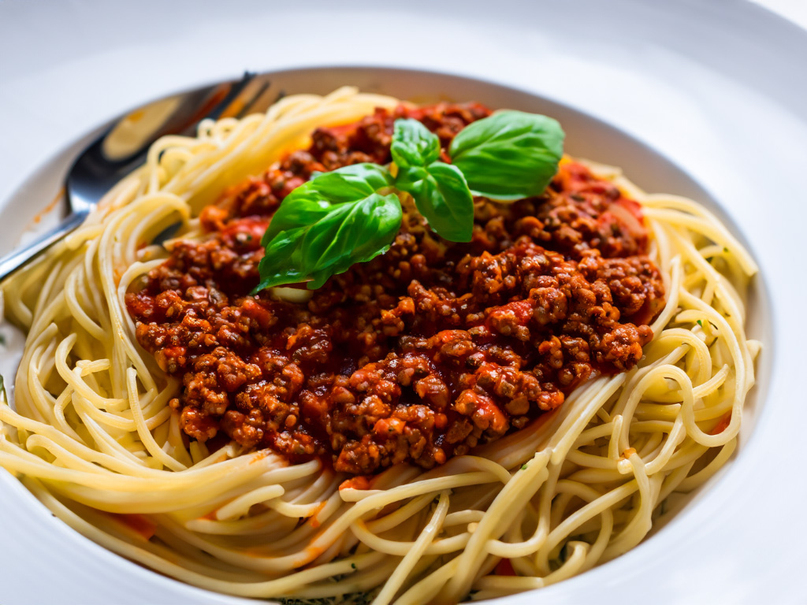

Spaghetti Bolognese
"Indulge in the rich flavors of our hearty Spaghetti Bolognese! This classic Italian dish features perfectly cooked spaghetti generously coated in a savory, slow-simmered Bolognese sauce. Our blend of finely chopped vegetables, premium ground beef, and aromatic herbs creates a mouthwatering medley that's both comforting and satisfying. Garnished with a sprinkle of Parmesan and fresh parsley, this timeless favorite is a celebration of traditional Italian cuisine. Prepare to savor every forkful of this delicious culinary masterpiece!"
Ingredients
- 400g ground beef
- 1 onion, finely chopped
- 2 carrots, finely chopped
- 2 celery stalks, finely chopped
- 2 cloves garlic, minced
- 2 tablespoons olive oil
- 2 tablespoons tomato paste
- 1 can (400g) crushed tomatoes
- 1 teaspoon dried oregano
- 1 teaspoon dried basil
- Salt and pepper to taste
- 400g spaghetti noodles
- Grated Parmesan cheese and chopped fresh parsley for garnish
Steps
-
Prepare the Sauce:
- In a large skillet, heat olive oil over medium heat.
- Add finely chopped onions, carrots, and celery. Sauté until vegetables are softened.
- Add minced garlic and ground beef, cook until beef is browned.
- Stir in tomato paste, crushed tomatoes, oregano, basil, salt, and pepper.
- Simmer the Bolognese sauce for 20-25 minutes, stirring occasionally.
-
Cook the Spaghetti:
- Cook spaghetti noodles according to package instructions until al dente.
- Drain and set aside.
-
Prepare the Cheese Mixture:
- In a bowl, combine grated Parmesan and chopped fresh parsley.
-
Assemble the Dish:
- Place a portion of cooked spaghetti on a plate.
- Spoon Bolognese sauce over the spaghetti.
- Sprinkle the Parmesan and parsley mixture on top.
- Serve hot and enjoy!